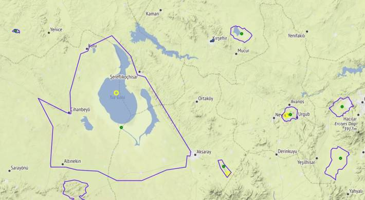

Yerel Coğrafi Veriler
Şehir kordinatlar, kamp yerleri, milli park verilerini içeren bazı
coğrafi veriler [1]'de bulunabilir. Sıkıştırılmış dosya açılmış hali
/opt/Downloads/trgeo diye farzedelim,
from pygeodesy.sphericalNvector import LatLon
import pandas as pd, numpy as np, json, glob
pd.set_option('display.max_columns', None)
base = '/opt/Downloads/trgeo'
Önce şehir kordinatlarına bakalım,
df = pd.read_csv(base + '/sehirler.csv')
print (df[['plaka','il_adi','lat','lon']])
plaka il_adi lat lon
0 1 ADANA 37.000000 35.321333
1 2 ADIYAMAN 37.764167 38.276167
2 3 AFYONKARAHİSAR 38.763760 30.540340
3 4 AĞRI 39.721667 43.056667
4 5 AMASYA 40.650000 35.833333
.. ... ... ... ...
76 77 YALOVA 40.650000 29.266667
77 78 KARABÜK 41.200000 32.633333
78 79 KİLİS 36.718399 37.121220
79 80 OSMANİYE 37.068050 36.261589
80 81 DÜZCE 40.843849 31.156540
[81 rows x 4 columns]
Diğer veriler
df.columns
Out[1]:
Index(['plaka', 'il_adi', 'lat', 'lon', 'northeast_lat', 'northeast_lon',
'southwest_lat', 'southwest_lon'],
dtype='object')
northeast_, southwest_ diye giden kolonlar il merkezini tanımlayan
bir kutunun uçlarını gösteriyor olmalı, kontrol etmedik belki bazıları
için faydalı olabilir.
Kamp yerlerini gösteren iki tane dosya var, kamp/kampyerleri.csv ve
kamp/trkamp.csv. Daha büyük olan birinci dosya. Tek bir satıra
bakalım,
df = pd.read_csv(base + '/kamp/kampyerleri.csv',sep=';')
df1 = df[df.name == 'Davraz Tepe']
lat,lon = df1['location'].to_string(index=False).strip().split(",")
print (lat,lon)
print ("\n",df1['description'])
30.871582 38.0275405
12 Egirdir Golu, Isparta ili sinirlarinda yer ala...
Name: description, dtype: object
Tabiat Alanlari, Milli Parklar
Bu kategori altinda birkac tane dosya var,
glob.glob(base + "/millipark/*.json")
Out[1]:
['/opt/Downloads/trgeo/millipark/milli_parklar.json',
'/opt/Downloads/trgeo/millipark/ozel_cevre_koruma_alanlari.json',
'/opt/Downloads/trgeo/millipark/sulak_alanlar.json',
'/opt/Downloads/trgeo/millipark/tabiat_anitlari.json',
'/opt/Downloads/trgeo/millipark/tabiat_parklari.json',
'/opt/Downloads/trgeo/millipark/yaban_hayati_gelistirme_sahalari.json',
'/opt/Downloads/trgeo/millipark/tabiati_koruma_alanlari.json']
Veriler kml formatında [3] makalesi yazarından geliyor; onları json
formatına çevirmek için zip içinde conv.py kodu var. Biz bu çevrimi
yaptık, dosyalar aynı zip içinde. JSON veri dosyaları okunduktan sonra
basit Python sözlüğüne erişir gibi erişebiliyoruz, buradaki önemli
veri park, korunma alanın sınırlarını tanımlayan enlem, boylam
listesi,
f = base + "/millipark/tabiat_parklari.json"
with open(f, encoding='utf-8') as fh:
data = json.load(fh)
print (list(data.keys())[:10])
['ABANT GÖLÜ TP', 'GÜVERCİNLİK TP', 'ÇİÇEKLİ TP', 'EFEOĞLU TP', 'BORÇKA KARAGÖL TP', 'KARGALI GÖLCÜK TP', 'DELMECE YAYLASI TP', 'KÜÇÜKELMALI TP', 'SUUÇTU TP', 'AYVALIK ADALARI TP']
Bunlardan birini seçelim, mesela DELMECE YAYLASI TP
dy = data['DELMECE YAYLASI TP']
dy = np.array([[float(x[0]),float(x[1])] for x in dy])
print (dy[:5])
[[40.69293056 31.77253616]
[40.69254208 31.77262633]
[40.691463 31.7727743 ]
[40.6902973 31.77253936]
[40.68959222 31.77169046]]
Bu şekilde alanı tanımlayan poligonun köşe noktalarını elde ettik. Bu noktaları direk grafikleyebiliriz, favori coğrafi paketi burada kullanılır, şurada [4] anlatılan Folium olabilir mesela, ya da basemap..
Eğer noktaların ortasını bulmak istiyorsak [5] şu kod,
def mid(coords):
b = (LatLon(lat,lon) for lat,lon in coords)
nvecs = np.array([a.toNvector() for a in b])
mid = nvecs.mean().toLatLon()
return mid.lat,mid.lon
mid(dy)
Out[1]: (40.69422873080869, 31.779313871773233)
Üstteki tüm verileri kullanan bir kod [2]'de, çıktısı veriyi içeren
aynı zip içinde, trgeo.html.

Kaynaklar
[1] [Veriler](https://drive.google.com/uc?export=view&id=1qM0KPCZz8JlTWoJJ1-FjYYrNzCDGtoGD)
[2] [Haritalama Kodu](trgeo.py)
[3] Örücü, Analysis of the Border Change in Beyşehir Lake and Kizildağ National Parks in Terms of Land Cover and Land Use, Link
[4] [Haritalamak](../../2020/02/haritalamak.html)
[5] [Genel Coğrafi Kordinat Kodları](../../2018/06/genel-gps-html5-javascript-python.html)
Yukarı